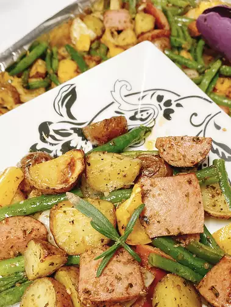

Sheet Pan Sausage and Vegetables

Description
This sheet pan sausage dinner can be made with the pre-cooked sausage of your choice and is done in about an hour. Plus, this recipe is super customizable! Dish is best warm and fresh but extra will keep airtight in the fridge for up to 5 days.
Ingredients
- cooking spray
- 4 tablespoons olive oil, divided
- 1 tablespoon rosemary
- 1 teaspoon kosher salt
- 1/2 teaspoon black pepper
- 16 ounce red potatoes, bite-size
- 1 tablespoon dried onion flakes
- 1 tablespoon smoked paprika
- 1 tablespoon dried parsley
- 1 tablespoon dried oregano
- 12 ounce fully cooked kielbasa, cut into 1 1/12 inch pieces
- 12 ounce green beans
- 1 medium yellow bell pepper, bite-size strips
- 1 medium onion, cut into bite-size pieces
Steps
- Preheat the oven to 425 degrees F (220 degrees C). Line a baking sheet with aluminum foil for easier cleanup and spray with cooking spray.
- Combine 2 tablespoons olive oil, rosemary, 1/2 teaspoon salt, and 1/4 teaspoon pepper in a large bowl. Add potatoes and toss to coat. Place potatoes skin side-down on the baking sheet in a single layer.
- Roast in the preheated oven until tender when pierced with a fork, 23 to 25 minutes. Remove from oven; stir.
- Mix remaining olive oil, salt, pepper, onion flakes, paprika, parsley, and oregano in the same bowl. Add sausage, green beans, bell pepper, and onion; mix until well combined. Add to the baking sheet; spread in a flat layer.
- Roast until vegetables are tender and potatoes and sausage pieces are browned, tossing halfway through the roasting process, 20 to 25 minutes. Serve immediately.